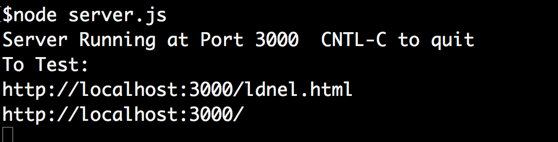

Assignment Revisions and Corrections will be noted here.
Rev 2: Clarification of R3.3, 3.7: Spectators should be able to join a game already in progress.
Rev 1: This assignment is described from the perspective that you will be using specifically the socket.io npm web sockets module. But if you prefer you can use one of the other npm web socket implementations, like ws, or whatever. (If you find another one you like email me the details about it.)
With this assignment we introduce some new web app elements.
1) We break away from the strict HTTP request-response model and allow asynchronous communication between client and server using web sockets. This means that the server can send data to a client that is not in direct response to a request from that client. This makes real-time collaboration (like chat rooms and online games) possible.
2) We introduce the use of an external NPM module socket.io to provide web socket capabilities. This allows asynchronous communication between client and servers using the world wide web's HTTP protocol.
3) We introduce the design problem of "who is in charge of the data and decision making". It could be the server, a client, several clients, different clients taking turns. There is no right answer so you will have to make design choices. This is an ongoing design dilemma that you will always face when building web apps especially ones that involve collaboration among the clients.
In this assignment you will build a real-time collaborative app based on web sockets. Since this is meant to be an app that allows people working in different browsers to collaborate you can take advantage of the fact that we can host servers on the OpenStack virtual machines that can be reached by several different machines. If you run your server on an openstack machine with a floating IP address allocated others will be able to reach it from their own machines.
In this assignment you are going build a single page client-server app based primarily on native capabilties of Node.js, however this time you will use the npm module socket.io to implement asynchronous real-time data exchange between client and server. You are also free to import (or more correctly "require") other simple npm modules from the npm (node package manager) registry. However, the use of Express.js and similar "high level" frameworks is still not allowed for this assignment. This is still primarily a javascript programming exercise and we still want you to build an app based primarily on node.js built in capabilities with a few helper modules.
The components are:
Server build with just Node.js and its build in modules (e.g. http, path, fs, url), and that makes use of the npm socket.io module. You MAY NOT use express.js. If you have any doubts about whether you can require a certain npm module please check with me ahead of time.
Client: browser that is provided with a web page from the server consisting of html, css, javascript and jquery. (You can use which ever of these your want.) Once the initial webpage is served the remaining exchange between client and server will be in the form of JSON data strings.
Assignment Restrictions:
Technology Restrictions: You need to use the npm socket.io modules, other simple modules you might want (but no others are actually needed). You may not use the express.js framework or other higher level frameworks in this assignment. If in doubt ask about any modules you intend to include.
Assignments may be done in pairs: If you want to work with a partner you can. Please only submit one copy to culearn with both your names on it. (In the past we have had pairs who each thought the other member would submit and so nothing got submitted and both got zero.)
Marking: This assignment is based on 16 design requirements numbered R1.1...R3.11 for a total of 32 marks. [This assigment will be evaluated in the tutorial sessions with you running your code from openstack.]
Marks are awarded, or deducted, based on requirements as follows:
| Req Type | Assignment Grading |
|---|---|
| R0.x | Critical Submission and Intent Requirements. Assignment gets 0 if any critical submission |
| R0.x | Good Practice Requirements. You lose 2 marks for each good practice |
| Rx.x | Design Requirements. You earn 2 marks for each design requirement (green) satisfied and well implemented; 1 mark if it's partly met or met but not well implemented; and 0 if it's not met or attempted. |
The following requirements pertain to all your assignments regardless of what your application is supposed to do (i.e. regardless of the design requirements). These requirements are to ensure that your code is usable, readable, and maintainable.
R0.0 UNIQUENESS REQUIREMENT. The solution and code you submit MUST be unique. That is, it cannot be a copy of, or be too similar to, someone else's code, or other code found elsewhere. You are, however, free to use any code posted on our course website as part of our assignment solution. [Assignment mark =0 if this requirement is not met.]
R0.1 CODE SUBMISSION ORGANIZATION AND COMPILATION: You should submit all the code files and data files necessary to compile and run your app. The TA's will execute your app by following the instructions you provide in the README.txt file. If you compress your submission to culearn you must use only .zip format (not .rar or .tar or whatever). Though you are permitted to write code on Windows, Linux, or Mac OS the code should be generic enough to be OS agnostic. Your code must work with at least a current Chrome browser.
[Assignment mark =0 if this requirement is not met.]
R0.2 README FILE: Your submission MUST include a README.txt file telling the TA how to setup and run your app. The TA should not have to look into your code to figure out how to start up your app. Your README.txt MUST contain the following:
Your name, student number and email address and if you are working with a partner then their name, student number and email address as well.
Version: node.js version number and OS you tested on your code on.
Install: how to install needed code. This will likely look like npm install or npm install module_name
Launch: Instructions on how to launch your app. e.g. node server.js. As the course progresses there will be more launch options to it's important to provide instructions.
Testing: Provide Instructions on what the TA should do to run your app. e.g. visit http://localhost:3000/mytest.html?name=Louis. If your app requires a userid/password to run then provide one for the TA to use. Your server should print to the console the URL's that should be visited by the browser to demonstrate your app. List them in the order you want us to visit them:

Issues: List any issues that you want the marker to be aware of. In particular, tell us what requirements you did not implement or that you know are not working correctly in the submitted code. Here you are giving us your own assessment of your app.
Pay attention to any specific URL's that must be supported by your app.
[Assignment mark =0 if this requirement is not met.]
R0.4 INTENT REQUIREMENT: The solution
and code you submit must comply with the intent of the assignment. For example if you are required to build a node.js/javascript server and you choose to build an apache/PHP server instead you will have violated the intent of the assignment even though the user input-output experience might be the same. As another example, if you are asked to build a "thick client" solution where the server just supplies data and the browser renders it but you build a "thin client" solution where the server renders all the HTML pages you will have violated the intent even though the user's experience would look the same.
[Assignment mark =0 if this requirement is not met.]
R0.3 VARIABLE AND FUNCTION NAMES: All of your variables and functions should have meaningful names that reflect their purpose. Don't follow the convention common in math courses where they say things like: "let x be the number of customers and let y be the number of products...". Instead call your variables numberOfCustomers or numberOfProducts. Your program should not have any variables called "x" unless there is a good reason for them to be called "x". (One exception: It's OK to call simple for-loop counters i,j and k etc. when the context is clear and VERY localized.) Javascript variables don't have types which can help clarify things so choosing good names is even more important. Many functions in javascript are annonymous (have no name) and so the name of the variable that refers to them is even more important.
Remember: any fool can write code that a computer will understand; the goal is to write code that we can understand. [Minus 2 marks from assignment if this requirement is not met.]
R0.4 COMMENTS: Comments in your code must coincide with what the code actually does. It is a very common bug to modify or cut-and-paste code and forget to modify the comments and so you end up with comments that say one thing and code that actually does another. Don't over-comment your code - instead choose good variable names and function names that make the code "self commenting". Don't be reluctant to create local variables so that the variable name provides more clarity -there is no prize for having the fewest lines of code. [Minus 2 marks from assignment if this requirement is not met.]
R0.5 CITATION REQUIREMENT: If you use code from other sources you should cite the source in comments that appear with the code. If the source is an internet website then put the URL in the comments. You may use bits of code from outside sources but this may not form the complete solution you are handing in.You DON'T have to cite demo code we provide on the course web site or with tutorials and assignments, however that code should not be used for things you post publicly (like on GitHub). [Minus 2 marks from assignment if this requirement is not met.]
VERY IMPORTANT: Any sample code fragments provided may have bugs (although none are put there intentionally). You must be prepared to find errors in the requirements and sample code. Please report errors so they can be fixed and an assignment revision posted.
R0.4 INTENT REQUIREMENT: This assignment will be evaluated by you hosting your game on your Openstack server and demonstrating your solution in your tutorial session on the week the assignment is due. All assignments code is due before the start of the first tutorial that week. You will need to demonstrate that one of clients of your game is on another machine and the clients are co-ordinating through your openstack-hosted server. The evaluating TA's might use a mobile device as one of the clients as well.
For this assignment you will build a small app that features real-time collaboration between, or among, more than one browser client at the same time -ideally running on different machines. You will build a simple multi-player interpretation of a curling game based on an existing single-client demo version.
Real-time collaboration using web sockets is illustrated in tutorial 05 and you should work on tutorial 05 before you start coding this assignment -though you can think about the design beforehand. You can use that code if you want or abandon it completely -this assigment can be started from a "clean slate". The main design challenges will be to decide what gets communicated between client and server and who decides things like where the curling stones are, how they move, where and when collisions take place, and how stones deflect as a result of the collisions.
For this application two users with separate browsers are players but other browsers can be spectators viewing the game being played. So there will generally be more than two browsers involved. The two players would each have control of one colour of curling stone (the home team and the visitor team). A player will shoot the stone with their mouse as described in the requirements below and the motion and collisions of the stones will appear synchronized in all the clients.
Demo Code: We have provided a single-client simulation of the curling game. Your goal will be to turn this into a multi-player online game. You will have to make all the design decisions about what data is stored on the server and how data is exchanged with the clients. You are free to use as much of the demo code as you want or abandon it alltogether.
The demo code contains a user text field, submit button and moving word. Those might not needed in the assignment and could be removed -they are just there as programming examples incase you need to make use of that capability. The moving string, for example, illustrates how the length of the rendered string can be measured.
We have also be posting an example of a polling-based collaborative app (Asynchronous Collaboration based on Polling) and examples based on sockets (Basic Chat Collaboration with WebSockets) in the course notes module 13 on Real-Time Collaboration. Asynchronous interaction using web sockets is also explored in tutorial 05.
To play the demo application you need to first register as both the home and visitor player by pressing the provided buttons. After which you you can shoot from the shooting area for those players. The colour of the box around the score shows whether you are registered. The colour of the shooting area box shows which player should shoot next. The following screen capture video illustrates the demo code.
R1.1 The server code should use only javascript and node.js and use the npm socket.io module. Other simple modules could be allowed but discuss your intended use of them with the professor ahead of time. You cannot use framework modules like express.js or front-end frameworks.
R1.2 The real-time collaboration between client and server should be based on web sockets and in particular use the npm socket.io module.
R1.3 The server-side javascript should keep track of, or manage, who has permission to control (or shoot) a stone and not allow players to shoot out of turn or allow spectators to shoot the stones. Other browers should only be allowed to spectate and see the game happening in real-time. Note this app can be done entirely in the main memory of the server. This assignment does not require that you read and write any files (except the static files that deliver the app's webpage) or use a database.
R1.4 Server should be hosted on port 3000. The initial launch of the web app should be the result of the client making a request to http://localhost:3000/curling.html.
If on the otherhand you are hosting your server on one of our openstack machines then you will access it using an actual IP address instead of localhost using a URL like the following:
http://134.117.217.107:3000/curling.html
R2.1 The data exchanged during the game between clients and server should be in the form of JSON object strings. The initial launch of the client web page will just be the result of a GET request for a static application .html file and other supporting files after that it should be JSON data exchange. In other words this is a single-page app from any client's perspective.
R3.1 Launch: When the app first launches the client should see the game layout of the app. It should look something like the following (based on the demo code) but you can make minor changes if you want. The changes you make, however, should still allow someone familiar with the demo code to "drive" your app. [You should remove the text-field, submit button, and moving word from the demo code though.]
R3.2 Player registration: When the game launches the appearance of the Join as HOME, Join as VISITOR, and Join as Spectator, buttons should indicate whether those are available to the client. If another client is already registed as the HOME player, for example, then the Join as HOME button should be disabled. When a player joins the game the status of the buttons should change accordingly on all clients who have joined as players or spectators.
There are no synchornization requirements on clients who have not joined. In other words, synchronization is only required once a client actually joins as either a player or a spectator.
R3.3 Player registration: Only one client should be allowed to join as the HOME player and one as the VISITOR player. But, to allow easy testing for example, a single client should be allowed to join as both the HOME and VISITOR player. Once a client has joined as a player the scoreboard part of the application should indicate that that client is a player. In the demo code, for example, a coloured box around the score indicates the client is the player. [Rev 2: Spectators should be able to join a game already in progress.]
[Optionally, if you want, you can have the joining players supply their name or userid and display that on all the clients as well. You could use the text-field cointained in the demo code for that if you choose to implement this.]
R3.4 Shooting: A client should not be able to shoot, or move, the stones unless they are the registered (joined) player. Clients who join as a spectator should not be allowed to shoot or control the game in any way.
R3.5 Shooting: A player client should not be allowed to shoot out of turn. Moreover the application should indicate whose turn it is to shoot next. Like in the demo code, a coloured box should be drawn in the shooting area to indicate who should shoot next. Also, like the demo code, shooting should be disabled while stones are in motion and not allow the next player to shoot until the stones come to rest. The "next turn" coloured box should appear on all clients who have joined either as players or spectators.
R3.6 Shooting: Players should shoot the stones "catapult style" as is done in the demo code. Players shoot from the designated shooting area indicated by the coloured box. When the mouse is pressed in the shooting area by the player whose turn it is to shoot their stone should get positioned at the mouse press location [already done in the demo code]. Shooting should appear synchronized in all registered clients and the spectators should be able to see the aiming of the shooting catapult.
R3.7 Synchronized motion: The app should show any motion and collisions of the stones on all registered browser clients and the views should be synchronized. The motion should look the same on all the browsers watching. [Rev 2: spectators should be able to join games already in progress.]
R3.8 Close Up View: When the stones get close to the curling circles they should show up in the close up view on all the browsers watching. This should appear synchronized on all registered clients.
R3.9 Collisions: The stones should move and collide with each other in a realistic, or at least pleasing, way. The motion and collisions should appear synchronized in all the browsers watching. You will have to decide where collision decisions are made (server, one browser, two browsers, browsers taking turns, etc.) and what motion data is sent between clients and server. You should be mindful of what data is being passed back and forth. If you intend to pass your whole representation of the world around whenever anything happens that will generate a lot of network traffic. On the other hand, passing around only what is needed might smooth things out a lot. This is obvioulsy a critical design decision in designing real-time collaboration apps.
At the end of this assignment is an explanation of how the collision math in the demo code was programmed.
R3.10 Hammer Time: In the demo code the colour that shoots first just alternates after each end (round). But in curling the team that earns a point in the previous round shoots first in the next round. This gives the team that did not score in the previous round the hammer, or the last shot. Your application should do this by ensuring the team (home or visitor) that scores and end must shoot first in the next end.
R3.11 Deregistration: A client should be able to deregister, or un-join, the game by either closing their browser, or browser tab, or by reloading the page. The effect of one of these actions should be to send a socket message to the server that will de-register the client. When this happens the status should be reflected in all the other registered clients. For example, if the HOME player leaves then the Join as HOME button on all the other clients should become enabled allowing one of them to join as a player.
Here is an explanation of how the collision math in the demo code was programmed. It is already done -you don't have to implement this but explanation might be helpful in understanding the demo code. It is based on high-school geomery only and not physics. It is not physics because there are no forces, mass, or acceleration in the model. (If there is no force then there is no physics.)
Below are two balls, weights, or curling stones (of equal mass), hitting each other.
In the simple situation above the red weight is stationary and the yellow weight hits it. When two weights collide, the line through their centers is called the "line of impact". (Two weights collide when their centers are two weight radius lengths from each other). Suppose the yellow weight is traveling with velocity Vy at an angle "a" with the line of impact. After collision, the red weight will travel along the line of impact with a velocity approximately Ur = Vy*cos(a). The yellow weight will travel away with the same angle "a" but on the opposite side of the line of impact, with a velocity of approximately Vy*sin(a). In the next situation both weights are moving.
If both weights are moving the situation is similar but each imparts some velocity to the other. For example suppose the yellow weight is traveling with velocity Vy at an angle "a" with the impact line and the red weight is traveling with velocity Vr at an angle of "b" with the impact line. The yellow weight will bounce off again at an angle "a" with the impact line, but with approximate velocity Uy = Vy*sin(a) + Vr*cos(b). The red weight will bounce off at angle "b" with approximate velocity Ur = Vr*sin(b) + Vy*cos(a).
When programming simulations like this the velocity of the weights or balls is typically stored in a vertical and horizontal component. That is, the vertical direction velocity is stored separately from the velocity in the horizontal direction. This makes it easy do to the animation, and is explained further below.
The demo code is based on this analysis and works as follows: For each animation timer event, see which weights are moving and move them. Next see if any weights have collided. If so, adjust their velocities accordingly. In the demo code the stones maintain a boolean to indicate whether they are in motion or not -just to make checking easier.
Simulations like this typically have to be debounced and the tunneling problem has to be accounted for. Debouncing refers to making sure the same event is not processed, and reacted to, more than once. Tunneling refers to be fact that when stones collide they will actually be overlapping. If they bounce off each other but don't clear the overlap before the next animation timer event they will still be overlapping (i.e. will have tunnelled into each other). These problems are handled in the demo code by making collisions objects (instances of class Collision) and placing collisions in a collision set (instance of CollisionSet) which prevents a collision from being processed more than once.
Here is a further explanation of the math for collisions when the horizontal and vertical components of the velocity are stored separately. This is how the collisions are modelled in the demo code.
Lets examine the simple situation where weight 1 is
moving
and hits a stationary weight 2.
At the point of collision what do we know? We know the positions of each weight, (x1,y1) and
(x2,y2).
We know horizontal and vertical velocity of each weight, v1x,
v1y,
v2x = 0, v2y = 0. We know the weight's centers are 2R apart (R is the
radius
of a weight).
The velocity vector of weight1, called V, has magnitude
sqrt(v1x*v1x + v1y*v1y); Weight2 is stopped so its velocity is 0.
Our objective is to figure out the new vx and vy for the two weights after the collision. Looking at the situation 1 picture above we know the moving weight will depart at the same angle to the line of impact as it arrived -but on the opposite side, and we know the struck weight will depart along the line of impact. So everything we know at the point of collision is shown on the picture below.
First off, realize that the the model we are using
is a very simple (first order) approximation. That is, you will notice
V1
= V*sin(a) and V2 = V*cos(a). This is not strictly accurate. It is
based
on the approximation that sin(a) + cos(a) ~= 1. The approximation has it
maximum error at a=45 degrees. A better approximation would be use the more
correct
formula sin2(a) + cos2(a) = 1. If you want to use the
more
accurate interpretation for your code that is fine. In that case the
speeds
should be V1=V*sin2(a); V2=V*cos2(a). I will continue
though
with the simpler model as it would probably suffice for this level of animation. Online games often use simplified models of simplied computations to help with real-demands.
Now our objective is to figure out the new v1x, v1y,
v2x,
and v2y. Thus we want to resolve all the angles relative to vertical
and
horizontal.
The picture below now shows the important angles and
how they can be found.
Angle a is the angle the moving weight velocity
makes with
the line of impact.
Angle b is the angle that the line of impact makes with
the horizontal.
The angle then that the moving weight would depart
would
be angle c=b-a.
First remember the old velocity
V = sqrt(v1x*v1x + v1y*v1y);
Here is how the angles can be found.
b = arcsin((y2-y1)/2R) //i.e. computed from the known positions of the stones. //In Java, Math class there is an asin() method that does this //there also the sin() and cos() methods. (Javascript has similar math functions available through the Math function object).
d = arcsin(vx/V); //moving weight's angle with the vertical
a = pi/2 - b -d //i.e. angle a is 90 degrees less angle b and d; remember we have to work in radians so 90 degrees is pi/2.
So then the angle c at which the moving weight departs at relative to the horizon is: c = b - a.
So now we know all the important angles so let's calculate the new speeds.
The new speeds are:
V1 = V*sin(a); V2 = V*cos(a);
Resolve the speeds back into vertical and horizontal components for the two weights.
v1x = V1*cos(c); v1y = V1*sin(c); v2x = V2*cos(b); v2y = V2*sin(b);
So now the weights are on their way with new speeds and directions and will move when the next timer event occurs.
There are other details you may have to resolve. To handle two weights moving at once you can work out the additional details. It will involve a few more angles and speeds but won't be much harder. The other way you could do two weights moving is to handle it as two cases. In each case one is stopped and the other moving. Then just add the horizontal and vertical velocities of the two cases together at the end and you will have your answer (this is how the demonstration code works).